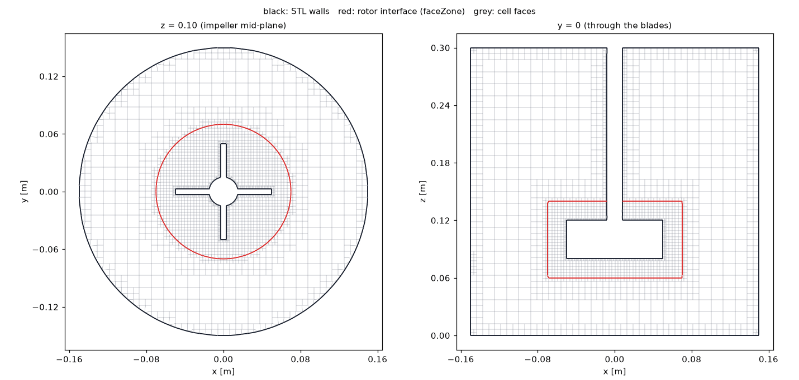

cutmesh
cutmesh generates octree-based polyhedral meshes inside watertight STL geometry and writes OpenFOAM's constant/polyMesh directly.
It cuts octree cells against the STL to create wall faces and cuts out rotating zones during meshing for applications such as stirred tanks.

News
- v0.7.0
Performance improvements, step 3. Speed-ups that may change the mesh slightly, each checked by a quality gate. Octree refinement tests the exact distance to the surfaces, feature edges and cylinders instead of sample points. The
gapRefinementtest looks at every wall coarsely first and samples finely only where it finds a thin gap. A snap that breaks a cell is redone only around that cell. The octree tests, cell assembly and leak check also do less work. On the public tilted stirred-tank benchmark (about 1 million cells, 4 cores), runtime fell from 28.3 to about 20 seconds. The cylindrical base mesh example went from 74.6 to 24.4 seconds, and geometry preparation for a gap example withgapRefinementfrom 50.6 to 8.8 seconds (memory 6.2 to 1.4 GB). Every benchmark case meets the gate for the changes that alter the mesh: no faces over 70 degrees non-orthogonality, no more faces with skewness over 4, no non-positive volumes, cell count within 3%, and no worse boundary layers or feature edges (run_bench.py --gate). - v0.6.0
Performance improvements, step 2. The remaining serial steps now run in parallel or in the Rust extension, with the same meshes as before. These include snapping, merging of small cut cells, the octree 2:1 balance and cell assembly, rotating-zone cuts, face pairing, and cell geometry. On a real-world geometry with about 8.5 million cells, runtime fell from about 100 seconds to about 70 seconds, and peak memory stays at about 13 GB. The meshes of this geometry, the public benchmarks, and the examples were verified byte for byte. The example timings were updated. The stirred tank went from 1.3 to 1.0 seconds and the 1 mm gap example from 9.2 to 7.3 seconds.
- v0.5.1
Lower memory usage. Each stage now releases data it has finished using, including octree faces, intermediate cut results, search structures, and caches. Peak memory dropped from 30 GB to about 13 GB on a real-world geometry with about 8.5 million cells, and from 7.8 GB to 3.4 GB in the 0.5 mm gap example (about 2 million cells). Usage is about 1.5–2 GB per million cells. The mesh and runtime are unchanged.
- v0.5.0
Performance improvements, step 1. The octree, snapping, STL and rotating-zone cuts, cell merging, assembly, and quality checks moved to the Rust extension and now run in parallel. On a real-world geometry with about 8.5 million cells, runtime fell from 1209 seconds to about 100 seconds (about 12× faster) and memory use fell from 65 GB to about 30 GB. At each step, the mesh was verified byte for byte on this geometry and the public benchmarks. The example timings were updated. The stirred tank went from 14.1 to 1.3 seconds and the 1 mm gap example from 131 to 9.2 seconds. The test machine also changed from 4 cores to 16. This release also added automatic block layout for cylindrical base meshes and the meshDict builder.
- v0.4.0
Added exact cuts for sharp convex edges that do not align with the grid, sliding-mesh (AMI) interfaces for rotating zones, showcase cases for pipes, ducts, and bluff bodies, and STL and meshDict input checks. The documentation site went live.
- v0.3.0
Added splitting of thin cut cells at refinement transitions, improved boundary-layer coverage on curved walls and concave corners, and sped up octree and boundary-layer processing. Also added automatic removal of duplicate and zero-area STL triangles and a benchmark suite.
- v0.2.0
Added rotating-zone interfaces in narrow gaps, non-conforming rotating zones, and cylindrical base meshes. This release also added preservation of sub-cell gaps and walls, automatic gap refinement, reduced chamfering of concave edges, and a boundary-layer thickness limit in narrow gaps.
- v0.1.0
First release with octree cut-cell meshing inside STLs, OpenFOAM polyMesh export, rotating-zone cuts, prismatic boundary layers, and a Rust extension for faster geometry calculations.
Versions and dates were assigned retrospectively to milestones in the commit history. cutmesh is still in pre-1.0 development.
Features
Mesh the inside of an STL
Create a wall patch for each solid name and set refinement levels by patch, feature edge, or volume region.
Cut rotating zones into the mesh
Cut a cylinder defined by dimensions or an STL to form internal faces on the cylinder surface. Export a cellZone, an oriented faceZone, and an MRFProperties template.
Narrow gaps and thin walls
Detect and refine features thinner than a cell to prevent blocked flow paths and leaks through missing walls. Automatic refinement can also use the measured gap width.
Boundary layers
Add prismatic layers to wall patches, including on polyMesh files created with other tools.
Cylindrical base mesh
Use concentric blocks around the rotation axis as the roots of the octree for rotating machinery.
Few dependencies
Runs with Python 3.9+, NumPy, and SciPy. OpenFOAM is optional for mesh generation. The Rust extension parallelizes almost every meshing stage (about 100× faster on the stirred tank example).
Quick start
git clone https://github.com/mmer547/cutmesh.git
cd cutmesh
pip install -e .
python tools/build_rust.py # Optional Rust extension (requires cargo)
cd examples/stirred_tank
python make_geometry.py # Generate the sample STL
cutmesh meshDict.json # → case/constant/polyMeshPut the settings in one JSON file. A minimal example follows.
{
"domain": "model.stl",
"baseCellSize": 0.01,
"surfaceRefinement": { "default": 2 },
"patchTypes": { "inlet": "patch", "outlet": "patch" },
"case": "case"
}See the manual for settings and feature details.
Examples



cutmesh is a prototype. Its built-in quality checks use the same formulas as checkMesh, and testing with OpenFOAM itself is limited. Run checkMesh locally before using a mesh.